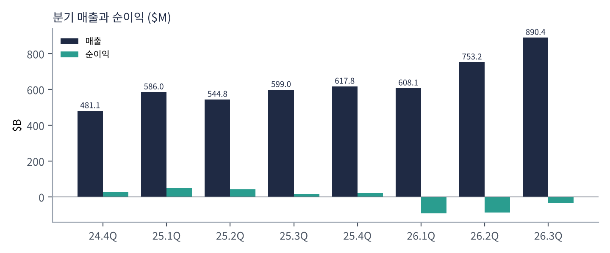
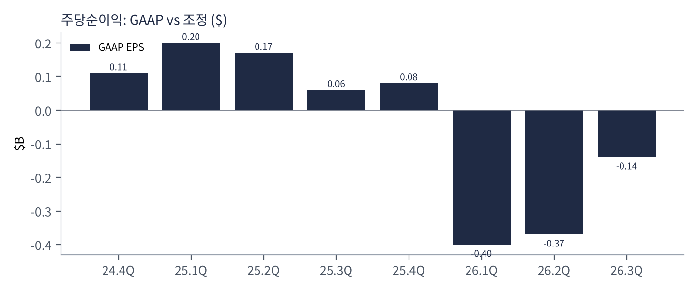
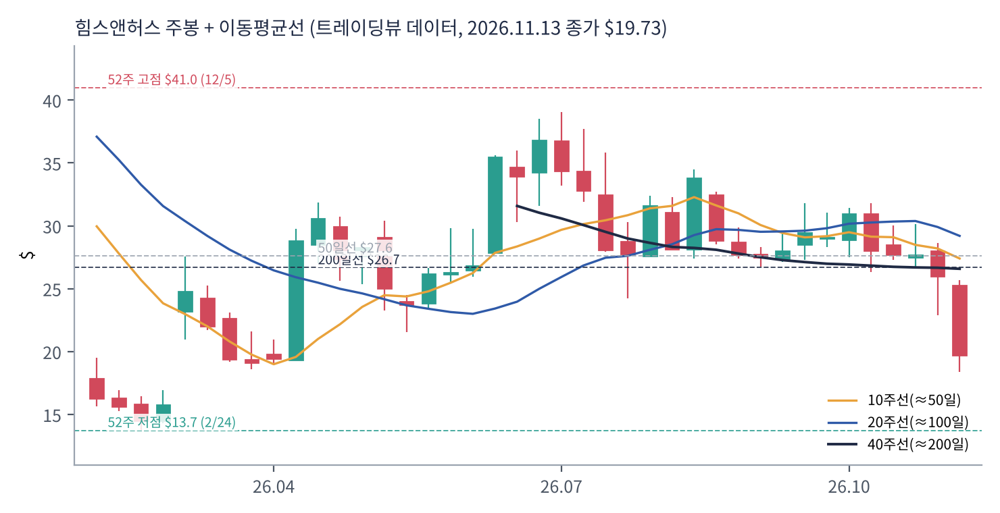
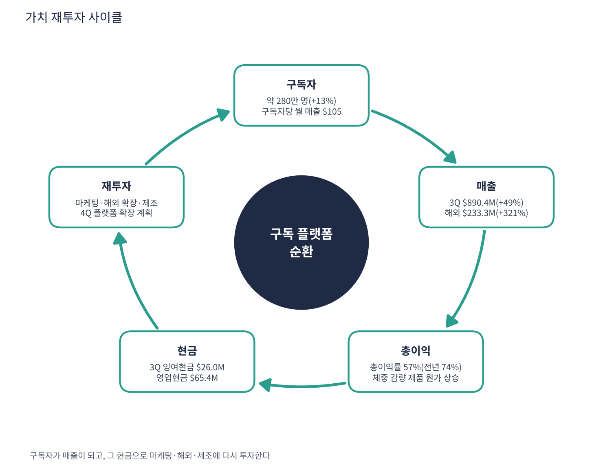

힘스앤허스는 탈모·피부·성기능·체중 관리 등 약을 구독으로 파는 원격 진료 플랫폼이다. 연 매출은 약 $28.7억(TTM)이다. 3분기 매출이 49% 늘었지만 체중 감량 제품 원가 때문에 총이익률이 74%에서 57%로 내려 순손실이 난 회사다.
| 항목 | 내용 |
|---|---|
| 종목 | Hims & Hers Health (HIMS) · NYSE · 원격 진료·개인 맞춤 건강 · 본사 미국 캘리포니아 |
| 시가총액 | 약 $46.2억 · PER 적자(GAAP) · P/S 1.61배 (11/13 종가 $19.73) |
| 최근 분기(3Q26) | 매출 $8.9억(+49%), 순손실 $0.3억, 조정 EBITDA $0.8억, 구독자 약 279만 명(+13%) |
| 지역(3Q) | 미국 $6.57억(+21%), 해외 $2.33억(+321%, 전체의 약 26%) |
| 가이던스 | 2026 매출 $31.3~31.5억, 조정 EBITDA $2.57~2.77억(하향). 4Q 매출 $8.75~8.95억, 조정 EBITDA $0.70~0.90억 |
| 현금·부채 | 현금 약 $7.1억, 총차입금 약 $15.6억(스캐너). 3Q 영업현금 $0.65억, 잉여현금 $0.26억 |
| 직책 | 인물 | 역할·특징 |
|---|---|---|
| CFO | 예미 오쿠페(Yemi Okupe) | '고객 관계를 가진 쪽이 이긴다'며 3분기 마케팅을 일부러 늦췄다고 설명(8-K) |
| CEO | 앤드루 두덤(공동창업자) | 2030년 매출 $65억, 조정 EBITDA $13억 목표를 유지한다고 전해짐(보도) |
경영 스타일: '성장을 먼저 사고 이익은 나중에 본다'. 3분기에 마케팅을 줄여 구독자가 전분기보다 약 10만 명 줄었는데도(보도) 해외 인수(유칼립투스, 2026년 6월·보도)와 체중 감량 상품 확대로 매출은 키웠다. 대가는 총이익률 하락과 조정 EBITDA 가이던스 하향이다.
진료·처방·배송을 한 앱에서 구독으로 묶는다. 3분기 구독자당 월 매출이 $105(+30%)로 올랐다.
체중 감량 약을 제약사 브랜드 약 중심으로 옮기고 해외로 넓힌다(보도). 4분기에 플랫폼 확장이 예정돼 있다고 CFO가 밝혔다.
| 분기 | 매출 | 순이익 | EPS | 조정 EPS | 특이 사항 |
|---|---|---|---|---|---|
| 2024.4Q | $4.8억 | $0.3억 | 0.11 | – | 4분기 값 근사* |
| 2025.1Q | $5.9억 | $0.5억 | 0.20 | – | |
| 2025.2Q | $5.4억 | $0.4억 | 0.17 | – | |
| 2025.3Q | $6.0억 | $0.2억 | 0.06 | – | |
| 2025.4Q | $6.2억 | $0.2억 | 0.08 | – | 4분기 값 근사* |
| 2026.1Q | $6.1억 | -$0.9억 | -0.40 | – | 매출 +4%, 첫 순손실 |
| 2026.2Q | $7.5억 | -$0.9억 | -0.37 | – | 매출 +38%, 순손실 확대 |
| 2026.3Q | $8.9억 | -$0.3억 | -0.14 | – | 매출 +49%, 총이익률 57% |


조정 EPS를 따로 발표하지 않음(트레이딩뷰 Reported도 GAAP과 같음). * 4분기 값은 '연간 − 1~3분기 합' 근사치. 2026년 3분기 매출에서 체중 감량 멤버십 $0.18억이 4분기로 이연됐다(CFO).
흐름 요약: 분기 매출은 $4.81억에서 $8.90억으로 늘었고 2026년 2·3분기에 가속했다. 순이익은 2025년 $0.5억 안팎에서 2026년 1분기부터 손실로 돌아서 3분기 -$0.33억으로 줄었다. 총이익률이 74%에서 57%로 내려 매출이 늘수록 이익이 따라오지 않는 구조다. 영업이익과 분기 설비투자는 구하지 못해 표에서 뺐다.
| 지역 | 3Q26 매출 | 비중 | 전년 대비 |
|---|---|---|---|
| 미국 | $6.57억 | 약 74% | +21% |
| 해외(RoW) | $2.33억 | 약 26% | +321%(유칼립투스 등 인수 포함·보도) |
미국이 4분의 3이고 해외가 빠르게 커진다. 구독 상품별(체중 감량·성기능·탈모 등) 매출 비중은 이 자료에서 구하지 못했다. 구독자당 월 매출 $105는 전년 $81에서 올랐다.
힘스앤허스는 '고객 관계를 직접 갖는 건강 플랫폼'이 되려 한다.
| 축 | 최근 움직임 |
|---|---|
| 구독 | 약 279만 명, 구독자당 월 매출 $105 |
| 해외 | 3Q 해외 매출 $2.33억(+321%) |
| 상품 | 체중 감량 약을 브랜드 약 중심으로 이동 |
| 위험 | 총이익률 57%, 조정 EBITDA 가이던스 하향 |

| 이동평균 | 값 | 종가 대비 | 해석 |
|---|---|---|---|
| 5일선 | $20.47 | -3.6% | 현재가가 아래 |
| 20일선 | $25.78 | -23.5% | 현재가가 아래 |
| 50일선 | $27.61 | -28.5% | 현재가가 아래 |
| 100일선 | $29.66 | -33.5% | 현재가가 아래 |
| 200일선 | $26.68 | -26.0% | 현재가가 아래 (-26%) |
주봉 흐름: 2025년 9월 $58 → 12월 고점 $41 부근 → 2026년 2월 저점 $13.7 → 3월 $23~25 → 6~8월 $27~35 → 10월 $28~31 → 11월 둘째 주 $29→$19(11/10 실적 이후 급락). 현재가는 모든 이동평균선 아래다.
| 규칙 | 기준 | 현재 값 | 신호 |
|---|---|---|---|
| 장기 추세 필터 | 종가 vs 200일선 | $19.73 < $26.68 | 매도 |
| 중장기 교차 | 50일선 vs 200일선 | $27.61 > $26.68 | 매수 |
| 단기 교차 | 20일선 vs 50일선 | $25.78 < $27.61 | 매도 |
| 돈키언 채널 | 55일 고가 $31.81 / 저가 $18.40 | 중간값 $25.10 아래 | 매도 |
| 1개월 모멘텀 | 21거래일 수익률 | -32.8% (기준 $29.38) | 매도 |
| 3개월 모멘텀 | 63거래일 수익률 | -31.0% (기준 $28.61) | 매도 |
| 6개월 모멘텀 | 126거래일 수익률 | -21.2% (기준 $25.05) | 매도 |
| 12개월 모멘텀 | 252거래일 수익률 | -49.4% (기준 $39.02) | 매도 |
| 종합 (8개 평균) | -0.75 | 강한 매도 |
해석: 8개 신호 중 매수 1개, 매도 7개(점수 -0.75, 강한 매도)다. 14일 ATR $2.35 (11.9%).
| 가격·조건 | 무엇이 바뀌나 | 의미 |
|---|---|---|
| $26.68 돌파 | 200일선 | 매도 → 매수 |
| 20일선이 50일선 위로 | 20/50 교차 | 매도 → 매수 |
| $25.10 돌파 | 돈키언 중간값 | 매도 → 매수 |
| $29.38 돌파 | 1개월 기준가 | 매도 → 매수 |
| $28.61 돌파 | 3개월 기준가 | 매도 → 매수 |
| 50일선이 200일선 위로 | 50/200 교차 | 이탈하면 매수 → 매도 |
| 구분 | 가격대 | 근거 |
|---|---|---|
| 저항 1 | $25.8 ~ 27.6 | 20일선 $25.8, 50일선 $27.6 |
| 저항 2 | $26.7 ~ 29.7 | 200일선 $26.7, 100일선 $29.7 |
| 지지 1 | $18.4 | 55일 저점 |
| 하방 | $18.4 이탈 시 | 52주 저점 $13.7까지 큰 지지 없음 |
점수가 -0.75라 신규 진입은 보류한다. 20일선($25.8)과 200일선($26.7)을 되찾고 신호가 바뀌면 계획 비중의 30%만 진입한다. 이미 보유 중이면 $18 종가 이탈 시 정리한다. 4분기 총이익률과 조정 EBITDA가 확인 지점이다.
| 악재 요인 | 내용 | 강도 |
|---|---|---|
| 총이익률 하락 | 3Q 57%(전년 74%), 체중 감량 제품 원가 상승 | 높음 |
| 가이던스 하향 | 2026 조정 EBITDA $2.57~2.77억으로 낮춤. 11/10 주가 -12%(보도) | 높음 |
| 구독자 감소 | 전분기 대비 약 10만 명 감소(보도) | 중간 |
| 순손실 | 2026년 1~3분기 연속 GAAP 순손실 | 중간 |
| 추세 | CTA -0.75, 52주 고점 대비 -52% | 높음 |
| 티커 | 회사 | 시가총액 | PER(TTM) | PEG | P/S | EPS 성장(YoY) |
|---|---|---|---|---|---|---|
| HIMS | 힘스앤허스 | $5B | 적자 | – | 1.61배 | -253% |
| HNGE | 힌지 헬스 | $10B | 58.1배 | – | 13.07배 | – |
| DOCS | 독시미티 | $6B | 46.4배 | – | 9.42배 | -43% |
| TDOC | 텔라닥 | $2B | 적자 | – | 0.64배 | +33% |
힘스앤허스는 PER·PEG를 산출할 수 없다. 비교는 P/S로 한다: 비교군 중 가장 낮으나 TDOC 외에는 이익이 나는 기업이어서 단순 비교가 어렵다. 값은 스캐너 기준이다.
힘스앤허스는 현금이 차입금의 절반이고 잉여현금이 작다. 현금 약 $7.1억, 총차입금 약 $15.6억이다.
| 지표 | 값 | 계산·출처 | 해석 |
|---|---|---|---|
| 현금 등 | 약 $7.1억 | 스캐너 | |
| 총차입금 | 약 $15.6억 | 스캐너(리스 등 포함 여부 미확인) | 순부채 약 $8.5억(내 계산) |
| TTM 잉여현금흐름 | 약 $0.12억 | 스캐너 | 3Q 단독 $0.26억(8-K) |
| TTM EBITDA | 약 $0.68억 | 스캐너(GAAP 기반) | 조정 EBITDA 가이던스 $2.57~2.77억과 큰 차이 |
| 기준 | 값 | 비고 |
|---|---|---|
| P/S (TTM) | 1.61배 | 스캐너. 2026 가이던스 중간값 $31.4억 기준 내 계산은 1.47배 |
| EV/조정 EBITDA | 약 20.5배 | EV 약 $54.7억 ÷ 2026 가이던스 중간값 $2.67억(내 계산) |
| 동종 | DOCS 9.4, HNGE 13.1, TDOC 0.64 | 11/13 스캐너 |
해석: P/S는 원격 진료 동종 중 낮은 편이지만 총이익률이 57%로 내려 같은 매출의 이익 질이 나빠졌다. 스트레스 가정(내 가정): 총차입금 $15.6억을 그대로 두고 P/S가 1.0배면 $12(-38%), 1.5배면 $18(-7%), 2.0배면 $25(+24%), 2.5배면 $31(+56%)다.
| 지표 | 값 | 판정 |
|---|---|---|
| PER | 적자 | 순이익이 마이너스라 산출 불가 |
| EV / EBITDA | 약 80배(GAAP TTM) · 약 20.5배(조정 가이던스) | 내 계산. 두 값의 차이는 주식보상 등 조정 항목 |
| 조정 EBITDA 마진 | 3Q 9.3%(내 계산 $82.4M ÷ $890.4M) | 전년 3Q $78.4M ÷ $599.0M = 13.1% |
| 방식 | PER | EPS 성장률 | PEG | 판정 |
|---|---|---|---|---|
| 트레이딩뷰 (GAAP TTM) | 적자 | -253% | – | 산출 불가 |
| 조정 EPS 기준 | – | – | – | 조정 EPS를 발표하지 않음 |
판정: PEG는 산출 불가다. 2026년 1분기부터 GAAP EPS가 마이너스이고 회사가 조정 EPS를 내지 않는다. 실적이 흑자로 돌아서면 판정할 수 있다.

힘스앤허스의 사이클은 구독자 → 매출 → 총이익 → 현금 → 마케팅·해외·제조 재투자다. 구독자가 늘면 매출이 늘고, 남은 현금으로 마케팅과 해외 확장을 해 구독자를 더 모은다. 약한 고리는 총이익과 현금이다.
| 고리 | 현재 숫자 | 고리 강도 | 약해지는 신호 |
|---|---|---|---|
| ① 구독자 | 약 279만 명(+13%), 전분기 대비 약 10만 명 감소(보도) | 보통 | 구독자 순감 지속 |
| ② 매출 | 3Q $8.90억(+49%), 해외 +321% | 강함 | 해외 인수 효과 소진 |
| ③ 총이익 | 총이익률 57%(전년 74%) | 약함 | 원가 상승이 이어질 때 |
| ④ 현금 | 3Q 잉여현금 $0.26억(전년 $0.79억) | 약함 | 영업현금 추가 감소 |
| ⑤ 재투자 | 4Q 플랫폼 확장 계획, 마케팅 재개 | 보통 | 가이던스 추가 하향 |
구조: ②가 강하고 ③④가 약하다. 매출이 이익과 현금으로 이어지는 비율이 내려가 사이클이 헐거워졌다. 4분기에 총이익률이 회복되는지가 확인 지점이다.